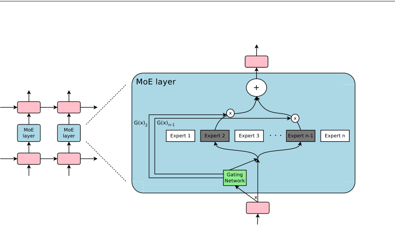
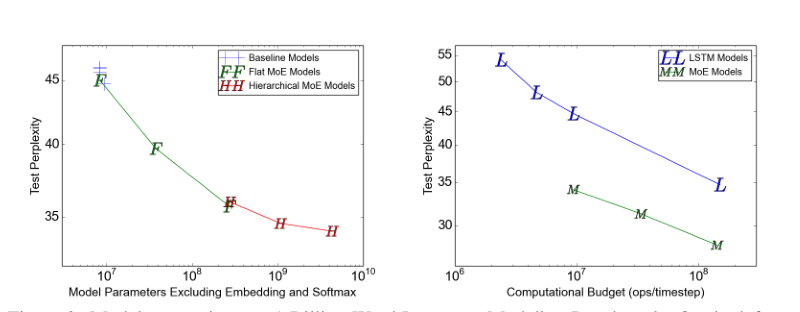

Frontier models kept 2017's sparse gate and rebuilt its load balancing
Shazeer and colleagues built a 4.3-billion-parameter model that beat the best published result on a one-billion-word benchmark at six percent of its compute, using a noisy gate and two balancing losses to keep 4,096 experts busy.
Outrageously Large Neural Networks: The Sparsely-Gated Mixture-of-Experts Layer
Read the paperThe capacity of a neural network to absorb information is limited by its number of parameters. Conditional computation, where parts of the network are active on a per-example basis, has been proposed in theory as a way of dramatically increasing model capacity without a proportional increase in computation. In practice, however, there are significant algorithmic and performance challenges. In this work, we address these challenges and finally realize the promise of conditional computation, achieving greater than 1000x improvements in model capacity with only minor losses in computational efficiency on modern GPU clusters. We introduce a Sparsely-Gated Mixture-of-Experts layer (MoE), consisting of up to thousands of feed-forward sub-networks. A trainable gating network determines a sparse combination of these experts to use for each example. We apply the MoE to the tasks of language modeling and machine translation, where model capacity is critical for absorbing the vast quantities of knowledge available in the training corpora. We present model architectures in which a MoE with up to 137 billion parameters is applied convolutionally between stacked LSTM layers. On large language modeling and machine translation benchmarks, these models achieve significantly better results than state-of-the-art at lower computational cost.1
The bill conditional computation promised to cut
A dense network pays for every parameter on every example. Doubling the parameter count to hold more of a training corpus roughly doubles the arithmetic each token costs, in training and again at inference. That coupling is the wall the paper is built against: capacity and per-example compute rise together, so a bigger model is a slower one.1
Conditional computation is the idea of breaking the coupling by running
only part of the network per example. It had been proposed years earlier,
and it had not delivered. The abstract is blunt about why: there were
significant algorithmic and performance challenges
in practice, not
in theory.1 The paper's answer
is a single layer. A trainable gating network reads each input, picks a
handful out of thousands of small feed-forward experts, runs only those,
and adds their outputs back together. The rest of the experts, for that
input, do no work.
A layer that mostly stays switched off
The layer holds n experts, each its own small feed-forward network with its own parameters, and one gating network G. On input x the gate emits a vector G(x) of n weights, and the layer returns the weighted sum of the experts it points to.2
Separate expert networks and a gate that learns which expert handles which cases is an old design, introduced by Jacobs, Jordan, Nowlan and Hinton in 1991, and Hinton is an author here too.3 What 2017 adds is the word sparse. In the original the gate spread soft weight across all experts, so all of them ran. Here the gate is forced to zero out all but a few weights, which is why the parameter count can grow without the arithmetic growing with it. The saving is real only if a zero weight means the expert is genuinely never run, so the gate has to produce exact zeros, not small numbers.

Why the gate adds noise before it ranks
The simplest trainable gate is a softmax over a learned linear projection of the input. It is differentiable and it spreads weight across every expert, which is exactly the density the layer cannot afford.2
Sparsity comes from keeping only the k largest entries before the softmax and sending the rest to negative infinity, so their softmax weight is exactly zero. That is the \mathrm{KeepTopK} step, and with it the gate over n experts fires only k of them, with k as small as two.2
Left there, the top-k cut has a problem the paper has to fix before the gate can be trained: it is a hard ranking. If the same few experts start out slightly ahead, they get chosen, they get gradients, they improve, and they stay ahead. Nothing pushes a good but currently unranked expert into the top k. The noise term is what breaks that lock. Before ranking, the gate adds Gaussian noise to each expert's score, scaled per expert by a second learned projection passed through softplus. This is the equation the whole gate turns on.
- (x \cdot W_g)_ithe clean score for expert i, the same projection the plain softmax gate ranks.
- \mathrm{StandardNormal}()a fresh standard-normal draw per expert per example, so the ranking wobbles from one pass to the next.
- \mathrm{Softplus}((x \cdot W_{noise})_i)a learned, input-dependent amount of that wobble, letting the network decide how contestable each expert's rank is.
Because the amount of noise is itself learned, the gate can quiet the wobble for an expert it is sure about and raise it for one it wants to keep in contention. The noise does a second job, the one the load loss depends on: it makes the count of examples reaching an expert a smooth, differentiable quantity the network can be trained to balance.2
Balance means two different things at once
Left to the main objective alone, the gate collapses. A few experts win early, take most of the traffic, and the rest wither. The paper stops this with balancing losses added to the training objective, and it runs two of them because there are two distinct things that can go out of balance.2
The first is importance: the total soft weight the gate assigns to each expert across a batch. Summing G(x) over the batch gives a per-expert importance, and penalizing the squared coefficient of variation of those totals pushes the gate to spread its weight evenly.2
Equal importance is not the same as equal work. Two experts can carry the same total gate weight while one is chosen by many examples at low weight and the other by a few at high weight. On the hardware, what costs money is how many examples land on each expert, and importance leaves that free. So the second loss balances load: the count of examples routed to each expert. That count is an integer, and an integer has no useful gradient, which is where the noise from the previous section pays off. The paper replaces the hard count with the probability each example would have reached the expert under a fresh noise draw, a smooth quantity it can sum and penalize.2
The smooth count is the paper's way around a problem Bengio, Léonard and Courville had catalogued in 2013: getting a gradient through a hard, on-or-off gating unit. Their survey studied estimators such as the straight-through gradient for exactly this situation.4 The 2017 layer sidesteps the hard estimator by defining a soft probability it can differentiate directly.
Importance equalizes the gate weight each expert receives; load equalizes the number of examples each expert actually runs. A single term aimed at either one leaves the other free to skew, and the skew that costs compute is the example count.2
The batch problem sparse routing creates
Sparsity does not make the compute vanish. It moves the cost, and one place it lands is batch size. Modern accelerators are efficient only on large batches, and routing splits the batch across experts. If k of n experts fire on a batch of b examples, each expert sees about kb/n of them. With thousands of experts, that per-expert batch collapses toward nothing, and each expert runs on a tiny slice at ruinous efficiency.2
The paper's fix is to make the batch each expert sees larger than the batch any one device holds. Mixing data and model parallelism across d devices, and keeping one shared copy of each expert that every device sends its routed examples to, raises the per-expert batch to about kbd/n. Applying the layer convolutionally across the timesteps of the recurrent stack enlarges it again, since every timestep contributes examples.2 The other cost is communication: every routed example crosses the network to its expert's device and back, and the paper keeps that affordable by holding the expected traffic per device fixed as it adds experts.
It is not the route the field later took. The later large-scale systems cap each expert at a fixed capacity and drop the examples that overflow rather than grow every expert's batch. The Switch Transformer caps each expert with a capacity factor and drops the tokens that overflow it, typically under one percent.5 GShard sets a per-expert capacity too and routes each token to at most two experts, dispatching the second only with probability proportional to its gate weight.6 Same throughput problem, different answer.
Capacity at six percent of the compute
The claim to test is that this buys capacity almost for free. The cleanest reading is the controlled comparison on the one-billion-word language benchmark, where per-example compute is held fixed and only capacity moves. The paper reports that its fastest sparse model beats the best previously published result while using about six percent of that baseline's computation, controlling for training epochs.2 Held instead at the baseline's compute, the sparse model does far more with it.

The left plot is the capacity claim in one picture: with per-example compute pinned, each added expert lowers perplexity, and the curve keeps falling out to billions of parameters. The right plot reads it the other way, showing that the sparse models reach any given perplexity far down and to the left of where the dense baselines reach it. Three rows from that curve fix the comparison.
| Model | Ops / timestep | Test perplexity |
|---|---|---|
| Best previously published | 151 M | 34.7 |
| MoE low compute | 8.9 M | 34.1 |
| MoE high compute | 142.7 M | 28.0 |
At about a sixteenth of the baseline's per-step compute the sparse model
already edges ahead, 34.1 against 34.7. Given roughly the baseline's compute
budget, it reaches 28.0. That is the concrete version of the capacity claim,
and it is a good deal smaller than the abstract's headline. The
greater than 1000x
in the abstract is a ceiling on capacity relative
to a dense network of comparable per-example compute, not a single measured
row.1 The 1B-word models above hold
about 4.3 billion parameters against the baseline's 151 million, roughly a
thirtyfold gap. The parameter count only reaches the thousandfold scale in a
separate model built on a hundred-billion-word corpus, with 131,072 experts
and 137 billion parameters, at 28.9 to 29.2 perplexity.2
The gains are not confined to language modeling. On WMT'14 English-to-French translation, a sparse model with 2,048 experts scored 40.56 BLEU against a strong GNMT baseline's 39.22, a gain of 1.34, with lower perplexity as well.2 A single multilingual model beat the monolingual baselines on 8 of 12 language pairs.2
Sparsity does not make the compute vanish; it moves the cost to batch size and communication, where the layer has to earn it back.
Which parts of the 2017 design the field kept
The sparse top-k gate is now standard in large models. The paper stated a premise that later work directly contradicted: that routing to more than one expert was needed to give the router non-trivial gradients. The Switch Transformer routes each token to a single expert, reports that this preserves quality and lowers routing and communication cost, and scales to 1.571 trillion parameters with a four-fold pre-training speedup over a tuned dense baseline.5 The two-loss balancing did not survive either. Switch collapses importance and load into one differentiable term, and GShard uses a single auxiliary loss of the same family.56
Later work questions whether a balancing loss belongs in the objective at
all. Expert-choice routing inverts the direction: instead of each token
picking its top experts, each expert picks its top tokens, so every expert
fills a fixed bucket and load is even by construction, with no auxiliary
loss. It reports more than a two-fold improvement in training convergence at
equal compute against both top-1 and top-2 routing.7
DeepSeek's loss-free balancing keeps token-choice routing but drops the loss
for a per-expert bias added to the routing scores before the top-k cut and
nudged up or down by each expert's recent load. Its authors argue the
balancing loss is not merely unnecessary but harmful, injecting
non-negligible interference gradients
that impair the model.8
That strategy is in production: DeepSeek-V3, 671 billion parameters with 37
billion active per token, states in its abstract that it uses an
auxiliary-loss-free balancing strategy at scale.9
The 2017 losses do keep a foothold where routing stayed token-choice. DeepSeekMoE, which segments experts more finely and reserves a few always-active shared experts, still trains with expert-level and device-level auxiliary balancing losses of the collapsed kind.10 The record does not resolve into one verdict on balancing, and it should not be forced to. Switch and GShard kept a loss and shrank it to one term; expert-choice removed the need for it by construction; loss-free balancing removed it and calls it a liability.
- Sparse top-k routing through a trainable gate is standard in frontier models, from Switch's trillion-parameter scale to DeepSeek-V3's 671 billion.59
- Capacity is close to free under fixed per-example compute, shown in the controlled six-percent-compute row on the 1B-word benchmark.2
- Balancing the load is a real requirement every successor design still has to meet in some form.7
- The premise that k > 1 is needed for router gradients was overturned by top-1 routing.5
- The two-loss balancing did not survive; successors use one loss, none, or a bias controller instead.8
- The 2017 batch fix, mixing parallelism and convolving over timesteps, was replaced by fixed expert capacity and token dropping.6
- The abstract's
1000x
is a capacity ceiling, not a measured result; the controlled gains on the 1B-word benchmark are about thirtyfold.1
The paper was right about the idea and wrong about much of the machinery. Conditional computation through a sparse, trainable gate does buy capacity at close to fixed per-example compute, and that idea carried straight through to today's largest models. Almost none of the specific engineering did. Top-1 routing replaced the k > 1 requirement.5 One balancing loss, or a bias controller, replaced the two coefficient-of-variation losses.58 Fixed capacity with token dropping replaced the parallelism-and-convolution batch fix.6
Sources
- Shazeer, Mirhoseini, Maziarz, Davis, Le, Hinton & Dean · Outrageously Large Neural Networks: The Sparsely-Gated Mixture-of-Experts Layer
- Shazeer, Mirhoseini, Maziarz, Davis, Le, Hinton & Dean · Outrageously Large Neural Networks (full text: gating math, appendices, figures)
- Jacobs, Jordan, Nowlan & Hinton · Adaptive Mixtures of Local Experts
- Bengio, Léonard & Courville · Estimating or Propagating Gradients Through Stochastic Neurons for Conditional Computation
- Fedus, Zoph & Shazeer · Switch Transformers: Scaling to Trillion Parameter Models with Simple and Efficient Sparsity
- Lepikhin, Lee, Xu, Chen, Firat, Huang, Krikun, Shazeer & Chen · GShard: Scaling Giant Models with Conditional Computation and Automatic Sharding
- Zhou, Lei, Liu, Du, Huang, Zhao, Dai, Chen, Le & Laudon · Mixture-of-Experts with Expert Choice Routing
- Wang, Gao, Zhao, Sun & Dai · Auxiliary-Loss-Free Load Balancing Strategy for Mixture-of-Experts
- DeepSeek-AI · DeepSeek-V3 Technical Report
- Dai et al. · DeepSeekMoE: Towards Ultimate Expert Specialization in Mixture-of-Experts Language Models